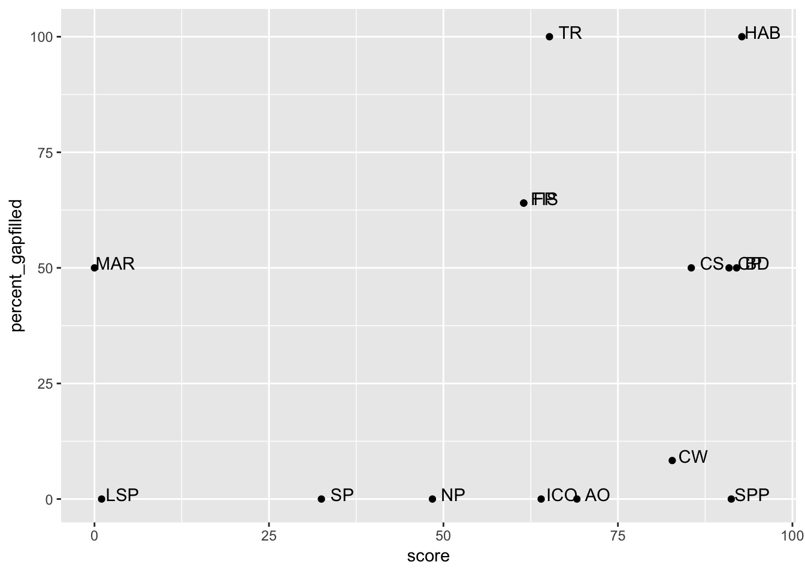

Explore OHI Global Data & Data Gaps for Samoa
Objectives
Following the presentation about OHI Global data and data gaps, let’s explore the OHI Global data for Samoa. We will continue with gapfilling to focus our attention.
Gapfilling in Samoa
Let’s look a bit deeper to see numerically the percent gapfilling by goal. This confirms what we saw above but with more information. We can pull directly from the data from the Frazier et al. 2015 publication:
It’s also interesting to compare the percent gapfilling by goal to the scores per goal. It looks like HAB had the highest score but also some of the highest percentage of gapfilling.
Table: % Gapfilled vs. Scores
We can see this as a table. Here it is arranged by percent gapfilled, but we can also arrange by score.
Figure: % Gapfilled vs. Status Scores
But it can also be nice to see it as a figure:

Gapfilling Observations
There are a lot of things we can talk about from this figure. What do you see?
Let’s list potential topics and then we will dive further into each of them.
Overall
Observations:
- Two goals are 100% gapfilled (TR, HAB)
- Samoa has a lot of goals (~11) with scores over 50 (on the x-axis)
- There are ~7 goals where % gapfilling is under 12.5% (on the y-axis)
- Some high-scoring goals have high % gapfilling, some have low
Tourism and Recreation (TR)
Observations:
- TR has the highest amount of gapfilling compared to any goal.
Habitat-based goals (HAB, CS, CP)
Observations:
- HAB is the goal with the highest amount of gapfilling and highest score
- CP, CS, and HAB rely on much of the same data.
Food Provision (FP)
Observations:
- FP and FIS are plotted on top of each other, which means that the FP score is the same as FIS (we can also see this from the table above). This means that MAR contributes nothing to the FP score, and in fact the MAR score is 0.
Lasting Special Places (LSP)
Observations:
- LSP has a very low score, and is not gapfilled.
Species-based goals (ICO, SPP)
- these scores are quite high and are not gapfilled (0).
Livelihoods and Economies (LE, LIV, ECO)
Observations:
- The LE goal is not on the figure. We didn’t include them in our gapfilling analyses because our models rely on old data (pre-2012).
What order should we discuss these?
Data discussion: deep dive
Food Provision: Fisheries
Questions:
- FIS has quite a bit of gapfilling (64%), which data or species are gapfilled?
Global Data
We can look on their website at an interactive visualization of fish caught in Samoa’s EEZ:

We can also look at an interactive visualization of Samoa fishing around the world (mostly high seas and agreements with other countries). So although Samoa fishes further than its own EEZ, we don’t include a lot of that catch.

Let’s look through the species listed and see if there are any included that don’t represent Samoa’s fisheries within the EEZ; we can remove them (but we won’t be adding additional species in this workshop).
Then, we can look at the mean catch estimates for certain species, especially for catch that is grouped instead of by species. If better local data are available, we can try to substitute these data.
Mean catch
Let’s look at the list of species that are represented in the FIS model as mean catch: (the fis_meancatch layer):
TODO mean_catch is rather a historic list because some things may not be caught any more. If it was a big catch in the past but now is 0, it will still average. it keeps things in the dataset.
There are 73 species in the fis_meancatch layer for Samoa.
We can look at this another way in the presentation.
Raw catch data
To understand mean catch, dive into catch by species. This might be best to view from within RStudio.
stock_sam <- readr::read_csv("data/stock_catch_by_rgn_sam.csv")
# View(stock_sam)TODO: “We would have to look at this more carefully and this is where it would occur”
TODO: note to self: If wanted to add new species data, don’t add it to mean_catch; add it to the raw and then recalculate using this. https://github.com/OHI-Science/ohiprep_v2018/blob/master/globalprep/fis/v2017/catch_data_prep.Rmd
B/Bmsy
These are the species stocks that we have data for fis_b_bmsy:
There are only 14 species in the fis_b_bmsy layer for Samoa.
Are there any species that don’t seem right?
Discussion
- Are there any species that don’t seem right and we should remove, for meancatch or B/Bmsy?
- There are many categories that we only have information at the genus or family levels. Do you have information for species level?
Food Provision: Mariculture
Questions:
- Why is the MAR score 0?
Global Data
Tonnes of Harvest
Let’s look at the list of species that are represented in the MAR model as tonnes of harvest: (the mar_harvest_tonnes layer):
So there are only 5 species reported to FAO, and they are all clams.
Let’s have a peek at the data:
Discussion
- are better data available for these species?
- are there other species that should be represented in Samoa?
Habitat-based goals
Questions:
- Which habitats are heavily gapfilled in HAB? (Or, which are not gapfilled in CP, CS?)
Global Data
Carbon Storage: 3 coastal habitats: mangroves, seagrasses, and salt marshes
Coastal Protection: 5 coastal habitats: mangroves, seagrasses, salt marshes, coral reefs, and sea ice (although not in Samoa!)
Habitats (BD sub-goal): 6 coastal habitats: mangroves, seagrasses, salt marshes, coral reefs, sea ice, and subtidal soft-bottom habitats
Habitat extent
TODO condition. extent is not gapfilled. but Condition is almost always gapfilled. extent is ~half of the calculation. For status.
HAB is entirely condition, which is all gapfilled for most places. One of our worst data sets. CP, CS goes down by ~50% because extent is ~1/2 of the score and extent is not gapfilled. (also mangrove trend is not gapfilled
Let’s have a look at the data included for Samoa:
So there is not a lot of data available for Samoa. This means that the goals are actually represented by this:
Carbon storage: 2 coastal habitats: mangroves (but the data is 0), seagrasses
Coastal Protection: 3 coastal habitats: mangroves (but the data is 0), seagrasses, coral reefs
Habitats sub-goal: 3 coastal habitats: mangroves (but the data is 0), seagrasses, coral reefs
Discussion
- Are there better data available?
- Should we look into the gapfilling question more?
Tourism & Recreation
TR is 100% gapfilled for Samoa.
Questions:
- What would be better ways to model TR for Samoa? What is important to capture?
- What data are available locally in Samoa?
- Is there local data to represent percent direct employment in tourism (tr_jobs_pct_tourism): Percent direct employment in tourism?
Natural Products
Global Data
Which Natural Products are included for Samoa?
So there are two products here.
We can also look at how much of this was gapfilled:
Discussion
- are there other products that should be included?
- is this a goal that represents Samoa well?
Lasting Special Places
Global Data
The model measures the percentage of coastal marine protected area and protected coastline in each country, against a reference percentage.
Discussion
- are there coastal or marine parks that are not accounted for?
Species-based goals
Global data
These are the species included in the Species goal:
And for Iconic Species:
Discussion and Next Steps
- We’ll explore the “local” data you have for fisheries and other goals and see if we can incorporate this into the Toolbox.
- we will capture the discussion we have, in particular about FP, TR, Habitat-based goals.
Other topics (parking lot)
Pressures and Resilience!
2017 report:
- It has been suggested to not use bycatch data for OHI assessment.
- pollution
2016 report:
- crown of thorns
- coastal development
We can also look at the gapfilling plot above along with the global average.